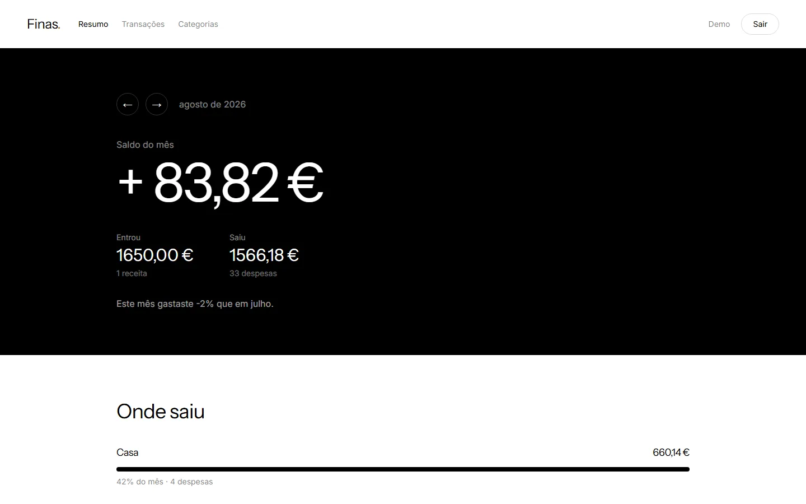
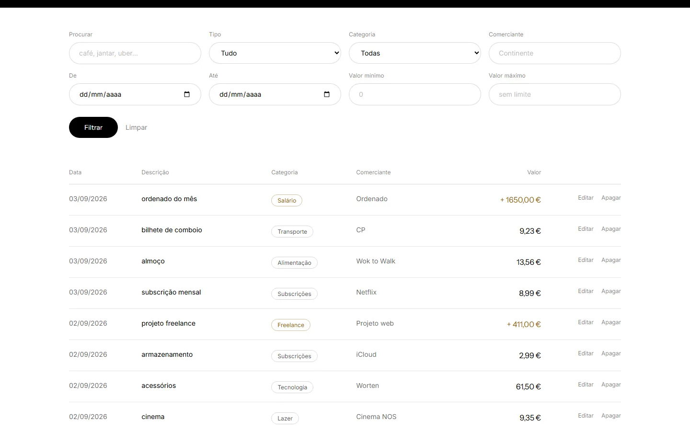

Bot de Telegram e dashboard web
Contas pessoais sem app para abrir e sem formulários para preencher. Escreves como escreverias a um amigo, uma IA percebe o valor, o sítio e a categoria, e guarda tudo por ti.
Projeto pessoal open source. O acesso ao bot é dado a pedido.
Uma frase normal no Telegram. Sem campos, sem menus, sem categorias para escolher à mão.
Valor, comerciante, data e categoria saem da frase já validados. Enganaste te? Corriges por texto, também em linguagem natural.
Na dashboard tens o saldo do mês, gastos por categoria, filtros e edição de qualquer movimento.
O bot é só a entrada de dados. O histórico, os gráficos e as categorias vivem numa dashboard web, com login sem password: pedes um código ao bot e entras.


O resumo do mês e a lista de movimentos, na app a sério.
O Finas é um projeto pessoal com o código aberto. Podes ler tudo, correr na tua máquina, ou alojar a tua própria instância com o teu bot e a tua chave de IA.
A instância que está no ar é pessoal, por isso o acesso ao bot é dado caso a caso. Se és uma empresa ou um cliente e queres ver isto a funcionar a sério, fala comigo que eu dou te acesso.